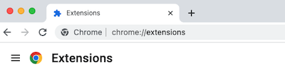

<-- back
GRAFFITI beta:
Download the beta here: graffiti.zip.
Bear in mind that GRAFFITI is a work in progress so it may have bugs or incomplete features.
Installation Instructions
1. Download the zip file linked above:
2. Unzip the file. You should get a folder called "graffiti"

3. Open Chrome and go to "chrome://extensions/"

4. In the upper-right corner toggle on Developer mode:
5. Click the "Load unpacked" button:
6. Select the unzipped folder. This should install the extension.
7. Click the puzzle piece icon in Chrome's menu bar:
8. In the dropdown, click the pin next to Graffiti.
This should show the GRAFFITI icon in the menu bar:
And it will turn orange when you visit a page that has comments: